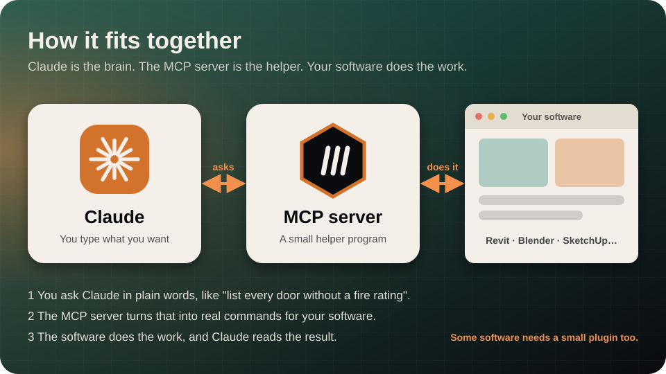
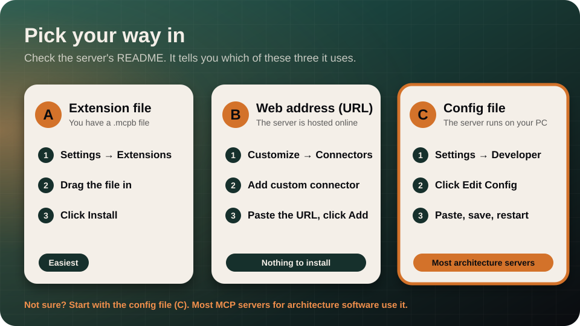
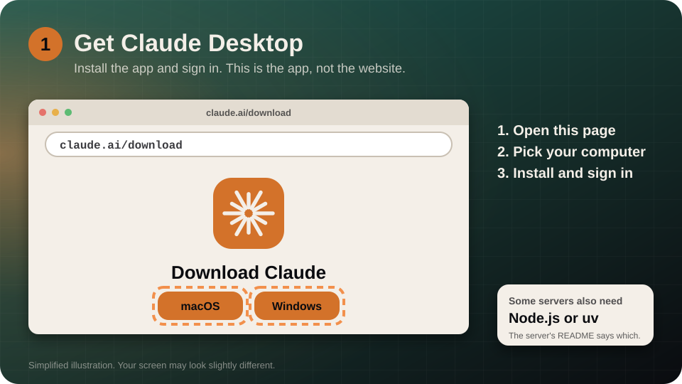
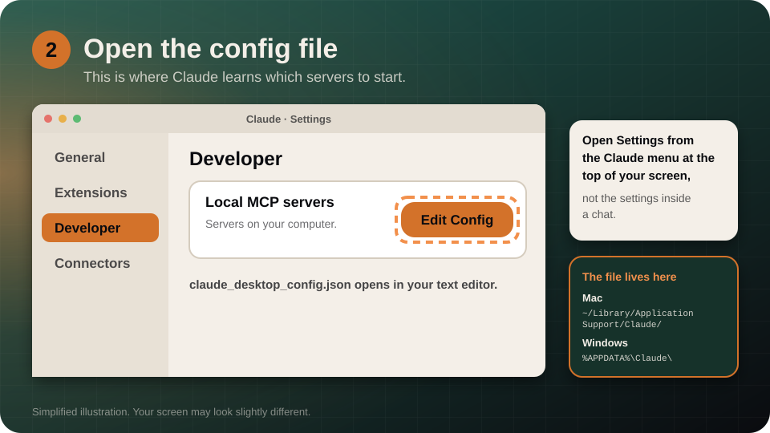
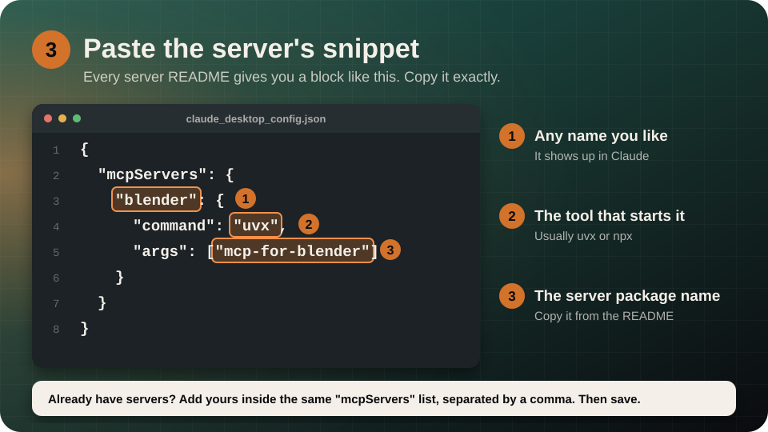
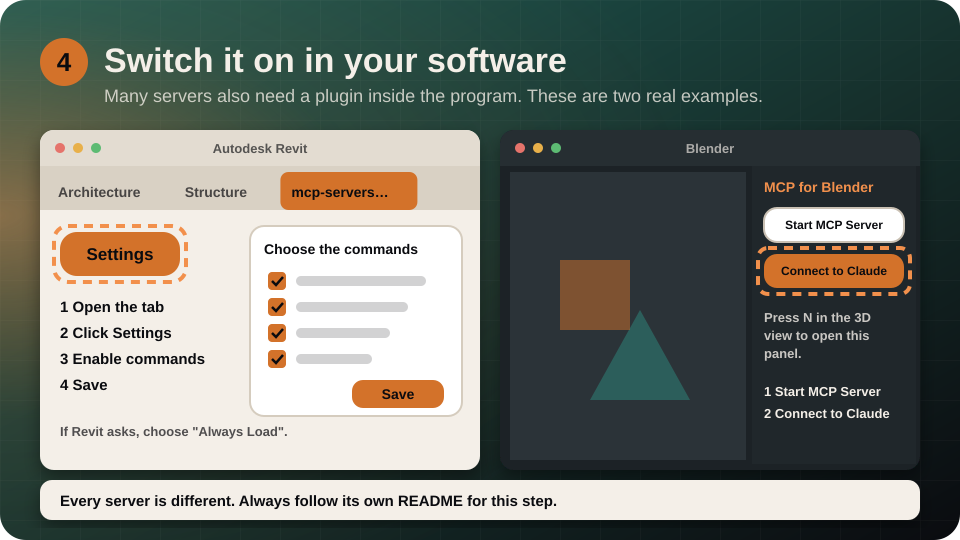
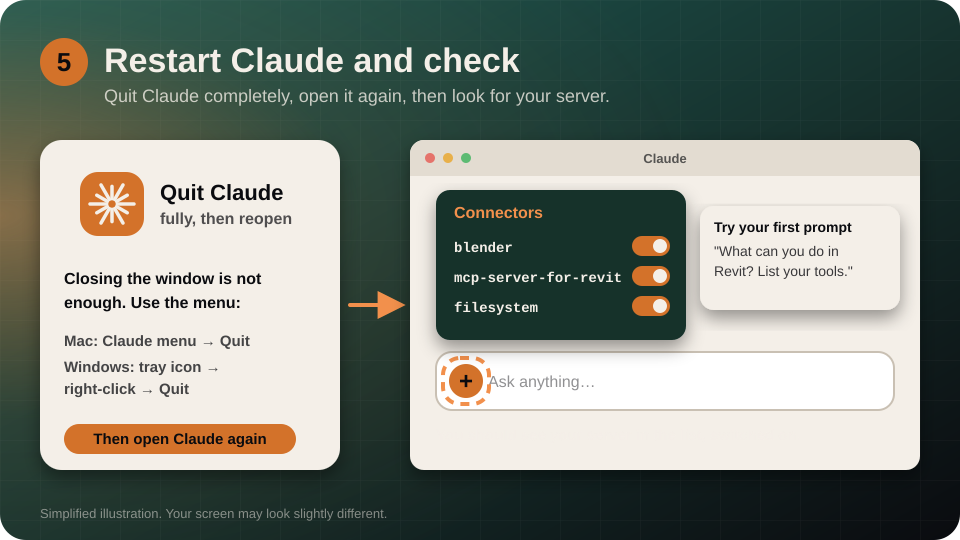
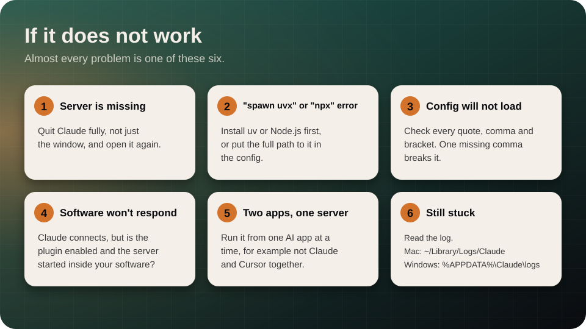

The big picture
Claude is the brain. The MCP server is a small helper program that lets Claude press buttons in your software. Your software does the work. You only talk to Claude in plain words.

Pick your way in
Open the server's README and look at its install section. It will match one of these. Not sure? Use C, because most architecture servers do.

AExtension file
You have a .mcpb file. Jump to A
BWeb address
The server is hosted online and has a URL. Jump to B
CConfig file
A JSON snippet and a command like uvx or npx. See the five steps
Way C: the five steps
This is the way most MCP servers for architecture software work.
1 · Install Claude Desktop

Go to claude.ai/download, choose your computer, install it, and sign in. If the server's README asks for Node.js or uv, install that now too.
2 · Open the config file

- In the Claude menu at the top of your screen (not the settings inside a chat), choose Settings…
- Click Developer in the left list.
- Click Edit Config. A file called
claude_desktop_config.jsonopens.
If you need to find the file yourself:
- Mac:
~/Library/Application Support/Claude/claude_desktop_config.json - Windows:
%APPDATA%\Claude\claude_desktop_config.json
3 · Paste the server's snippet

Copy the snippet from the server's README and paste it in. This is the real snippet for the Blender server:
{
"mcpServers": {
"blender": {
"command": "uvx",
"args": ["mcp-for-blender"]
}
}
}"blender"is just a name you choose. It is what you will see in Claude."uvx"is the tool that starts the server. It is usuallyuvxornpx."mcp-for-blender"is the server's package name. Always copy it from the README.
"mcpServers" section with a comma between them. Then save the file.4 · Switch it on inside your software

Many servers need a plugin installed in the program itself. Every server does this differently, so follow its README. The two worked examples below show what it looks like.
5 · Restart Claude and check

- Quit Claude completely. Closing the window is not enough. On Mac use the Claude menu → Quit. On Windows right-click the tray icon → Quit.
- Open Claude again.
- In the chat box, click the + (the “Add files, connectors, and more” button), then Connectors. Your server should be in the list.
- Try a first prompt: “What can you do in Revit? List your tools.”
Way A: a one-click extension
For servers packaged as a .mcpb file. Runs on your computer and includes what it needs, so there is no config file to edit.
- In Claude Desktop, open Settings → Extensions.
- Drag the
.mcpbfile onto the page. - Check the preview, click Install, then confirm.
Way B: a web address (remote server)
- In Claude, go to Customize → Connectors.
- Click Add custom connector.
- Paste the server's URL, for example
https://example.com/mcp. - Click Add, then Connect and sign in if it asks.
- In a chat, click + → Connectors to switch it on or off for that conversation.
On a Free plan you can add one custom connector. On Team and Enterprise plans an organization Owner adds it first, and members then connect. If your screen differs, see Anthropic's page on adding a connector that isn't in the directory.
Using Claude Code instead
If you use Claude Code in a terminal, one command does the whole job. The -- separates Claude's options from the server's own command.
claude mcp add my-server -- npx -y package-nameFor a server with a web address:
claude mcp add --transport http my-server https://example.com/mcpType /mcp inside Claude Code to see the status. claude mcp list shows all servers and claude mcp remove my-server removes one.
Two real examples
Taken from each project's own README.
mcp-for-blender. Needs Blender 3.0 or newer.
- Install uv. Mac:
brew install uv. Windows:winget install --id=astral-sh.uv -e. Do not usepip install uv. - Add the server to Claude with the snippet from step 3 above.
- Install the Blender add-on. In a terminal run
uvx mcp-for-blender install-addon. In Blender open Edit → Preferences → Add-ons, search for “MCP for Blender” and enable Interface: MCP for Blender. - Connect. In the 3D view press N, open the MCP for Blender tab, click Start MCP Server if needed, then click Connect to Claude.
- Quit Claude fully and reopen it.
mcp-servers-for-revit. Windows, Revit 2020 to 2026, plus Node.js.
- Install the plugin. Download the ZIP for your Revit version from the project's Releases page, extract it, and copy the contents to
%AppData%\Autodesk\Revit\Addins\<your Revit version>\. - Add the server to Claude (Settings → Developer → Edit Config):
{ "mcpServers": { "mcp-server-for-revit": { "command": "cmd", "args": ["/c", "npx", "-y", "mcp-server-for-revit"] } } } - Start Revit. If it asks about an unknown add-in, click Always Load.
- Open the mcp-servers-for-revit ribbon tab, click Settings, turn on the commands you want, and click Save.
- Quit Claude fully and reopen it.
Good first prompts
Start with questions that only read your model:
- “What tools do you have from this server?”
- “List the levels in my model.”
- “Describe what I am looking at in the current view.”
- “Which doors have no fire rating?”
Stay safe
If it does not work

| Problem | Fix |
|---|---|
| The server is missing in Claude | Quit Claude fully (not just the window) and open it again. |
spawn uvx ENOENT or an npx error | Install uv or Node.js first. If it is installed, put the full path in the config: run which uvx on Mac or where uvx on Windows and use that in "command". |
| Claude says the config is invalid | Check the JSON: every quote, comma and bracket must match. |
| Claude connects but the software does nothing | Is the plugin installed, enabled and started inside your software? |
| It worked, then stopped | Run the server from one AI app at a time, for example not Claude and Cursor together. |
Still stuck? Read the log files. Mac: ~/Library/Logs/Claude (mcp.log and mcp-server-<name>.log). Windows: %APPDATA%\Claude\logs.
Official docs
Menus change from time to time. These pages are the source of truth. This guide was checked against them on 2026-10-31.